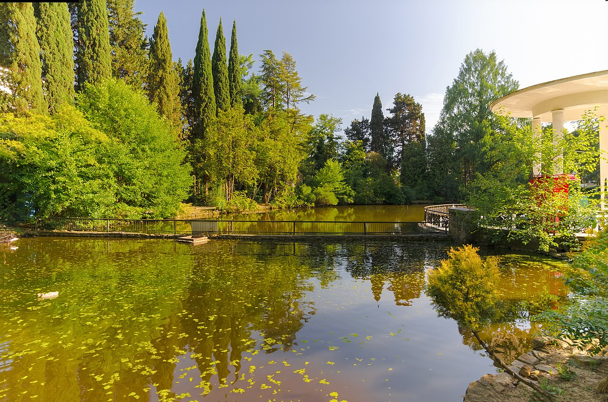

Сириус
Олимпийский парк и прогулка у моря. Маршрут можно совместить с размещением на побережье.
Официальный источник
МАРШРУТ / ПОБЕРЕЖЬЕ
Легкий день без дальней дороги. Прогулка по побережью, архитектура Сириуса и время в Сочи, которое можно оставить свободным.
ПО ПУТИ
Олимпийский парк и прогулка у моря. Маршрут можно совместить с размещением на побережье.
Официальный источникАллеи и виды в пределах города. Подойдет, если хочется сменить ритм после банного дня.
Официальный источник
Главное фото: Олимпийский парк, фото 2014 года, Сергей Казанцев, CC BY-SA 3.0. Состав и доступность маршрута проверяем перед поездкой.